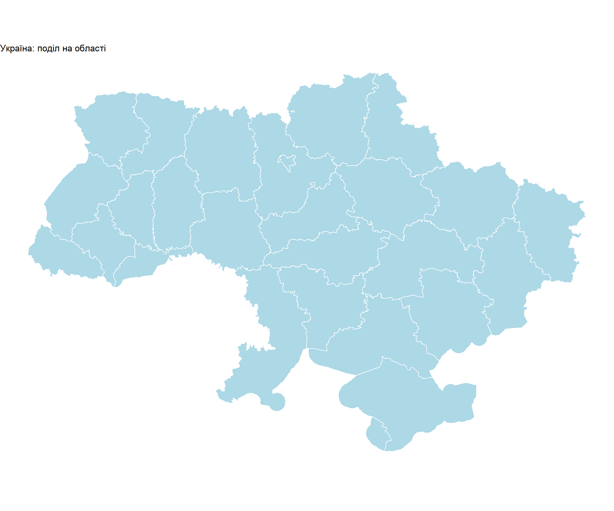
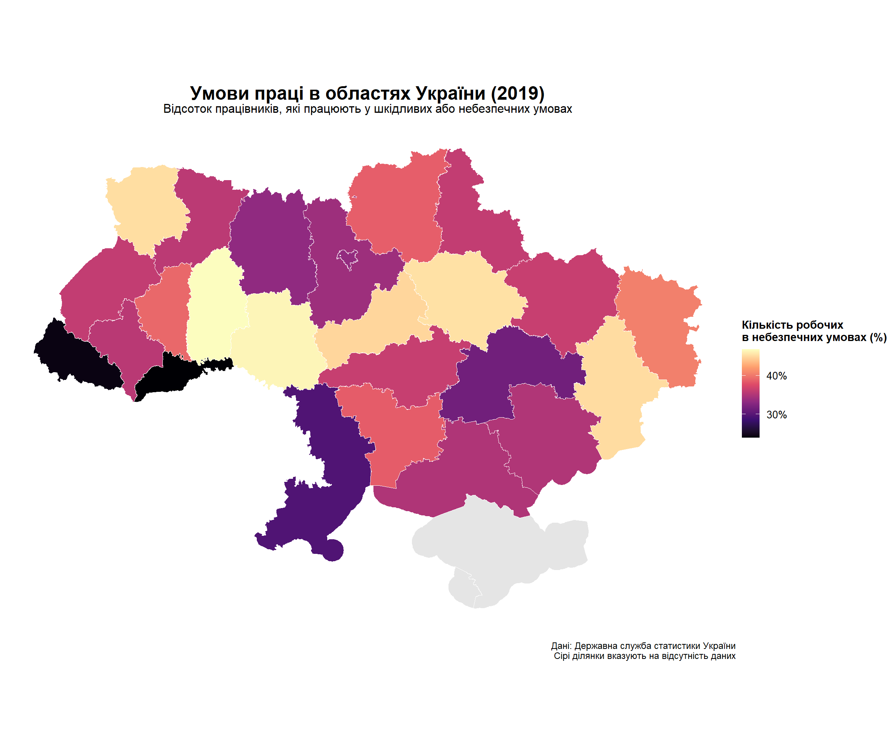
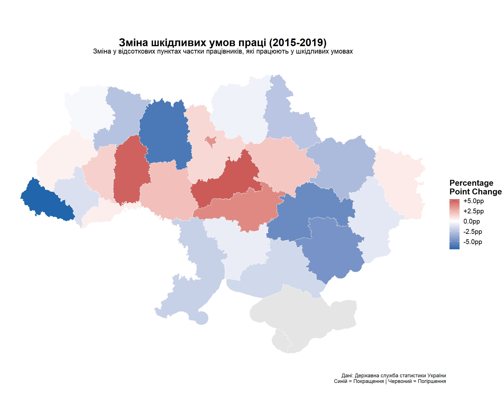
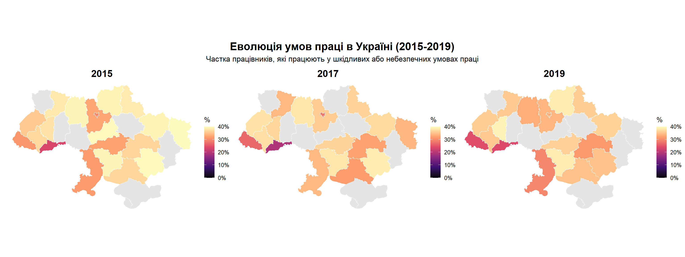
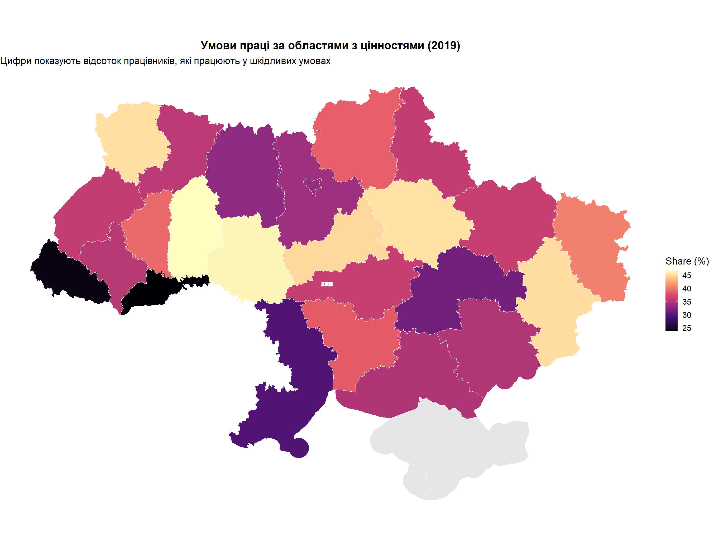
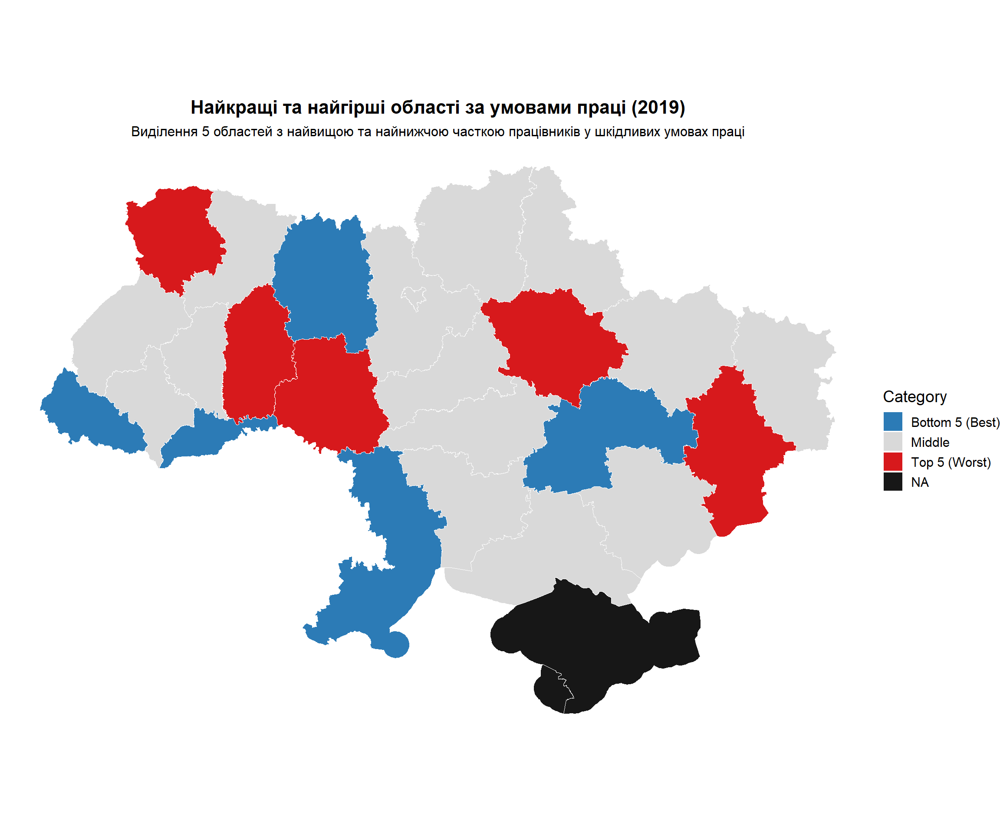

Code
if (!require("pacman")) install.packages("pacman")
pacman::p_load(
sf,
tidyverse,
giscoR,
rnaturalearth,
scales,
viridis,
patchwork,
knitr,
here
)
options(scipen = 999)Статистика праці за областями (2015-2019 рр.)
Цей аналіз досліджує просторовий розподіл умов праці в областях України з використанням офіційної статистики праці за 2015-2019 роки. Ми розглядаємо частку працівників, які працюють у шкідливих умовах, та візуалізуємо регіональні диспропорції за допомогою хороплетичних карт.
Цілі дослідження:
Скласти карту відсотка працівників у шкідливих умовах праці за областями
Визначити регіональні закономірності та диспропорції в безпеці праці
Проаналізувати часові зміни між 2015 та 2019 роками
Візуалізувати промислову концентрацію та її зв’язок з умовами праці
if (!require("pacman")) install.packages("pacman")
pacman::p_load(
sf,
tidyverse,
giscoR,
rnaturalearth,
scales,
viridis,
patchwork,
knitr,
here
)
options(scipen = 999)ukraine_oblasts <- read_sf("data/geoBoundaries-UKR-ADM1.shp")
glimpse(ukraine_oblasts)Rows: 27
Columns: 6
$ shapeName <chr> "Kherson Oblast", "Volyn Oblast", "Rivne Oblast", "Zhytomyr…
$ shapeISO <chr> "UA-65", "UA-07", "UA-56", "UA-18", "UA-32", "UA-74", "UA-5…
$ shapeID <chr> "14850775B65901307765467", "14850775B13681962240800", "1485…
$ shapeGroup <chr> "UKR", "UKR", "UKR", "UKR", "UKR", "UKR", "UKR", "UKR", "UK…
$ shapeType <chr> "ADM1", "ADM1", "ADM1", "ADM1", "ADM1", "ADM1", "ADM1", "AD…
$ geometry <MULTIPOLYGON [°]> MULTIPOLYGON (((35.23342 45..., MULTIPOLYGON (…# Check unique oblast names
cat("Number of regions:", nrow(ukraine_oblasts))Number of regions: 27cat("\nOblast names:")
Oblast names:print(sort(unique(ukraine_oblasts$shapeName))) [1] "Autonomous Republic of Crimea" "Cherkasy Oblast"
[3] "Chernihiv Oblast" "Chernivtsi Oblast"
[5] "Dnipropetrovsk Oblast" "Donetsk Oblast"
[7] "Ivano-Frankivsk Oblast" "Kharkiv Oblast"
[9] "Kherson Oblast" "Khmelnytskyi Oblast"
[11] "Kirovohrad Oblast" "Kyiv"
[13] "Kyiv Oblast" "Luhansk Oblast"
[15] "Lviv Oblast" "Mykolaiv Oblast"
[17] "Odessa Oblast" "Poltava Oblast"
[19] "Rivne Oblast" "Sevastopol"
[21] "Sumy Oblast" "Ternopil Oblast"
[23] "Vinnytsia Oblast" "Volyn Oblast"
[25] "Zakarpattia Oblast" "Zaporizhia Oblast"
[27] "Zhytomyr Oblast" ukraine_oblasts <- ukraine_oblasts |>
mutate(
oblast_standard = case_when(
shapeName == "Volyn Oblast" ~ "Волинська",
shapeName == "Rivne Oblast" ~ "Рівненська",
shapeName == "Zhytomyr Oblast" ~ "Житомирська",
shapeName == "Kyiv Oblast" ~ "Київська",
shapeName == "Chernihiv Oblast" ~ "Чернігівська",
shapeName == "Sumy Oblast" ~ "Сумська",
shapeName == "Kharkiv Oblast" ~ "Харківська",
shapeName == "Luhansk Oblast" ~ "Луганська",
shapeName == "Donetsk Oblast" ~ "Донецька",
shapeName == "Zaporizhia Oblast" ~ "Запорізька",
shapeName == "Kherson Oblast" ~ "Херсонська",
shapeName == "Autonomous Republic of Crimea" ~ "АР Крим",
shapeName == "Sevastopol" ~ "Севастополь",
shapeName == "Mykolaiv Oblast" ~ "Миколаївська",
shapeName == "Odessa Oblast" ~ "Одеська",
shapeName == "Vinnytsia Oblast" ~ "Вінницька",
shapeName == "Cherkasy Oblast" ~ "Черкаська",
shapeName == "Poltava Oblast" ~ "Полтавська",
shapeName == "Dnipropetrovsk Oblast" ~ "Дніпропетровська",
shapeName == "Kirovohrad Oblast" ~ "Кіровоградська",
shapeName == "Khmelnytskyi Oblast" ~ "Хмельницька",
shapeName == "Ternopil Oblast" ~ "Тернопільська",
shapeName == "Lviv Oblast" ~ "Львівська",
shapeName == "Ivano-Frankivsk Oblast" ~ "Івано-Франківська",
shapeName == "Zakarpattia Oblast" ~ "Закарпатська",
shapeName == "Chernivtsi Oblast" ~ "Чернівецька",
shapeName == "Kyiv" ~ "Київ",
TRUE ~ shapeName
)
)
ggplot(ukraine_oblasts) +
geom_sf(fill = "lightblue", color = "white", size = 0.5) +
theme_void() +
labs(title = "Україна: поділ на області")
work_cleaned <- work_data |>
filter(
str_detect(Показник, "Частка"),
`Територіальний розріз` != "Україна",
`Вид економічної діяльності` == "Усього",
Стать == "Не застосовується" | is.na(Стать)
) |>
select(
oblast = `Територіальний розріз`,
year_2015 = `2015`,
year_2017 = `2017`,
year_2019 = `2019`
) |>
distinct() |>
mutate(
year_2015 = as.numeric(year_2015),
year_2017 = as.numeric(year_2017),
year_2019 = as.numeric(year_2019)
) |>
filter(!is.na(year_2015) | !is.na(year_2017) | !is.na(year_2019)) |>
pivot_longer(
cols = starts_with("year_"),
names_to = "year",
values_to = "percentage",
names_prefix = "year_"
) |>
mutate(year = as.numeric(year)) |>
filter(!is.na(percentage)) |>
group_by(oblast, year) |>
summarise(percentage = mean(percentage, na.rm = TRUE), .groups = "drop")
cat("Очищені розміри даних:", dim(work_cleaned))Очищені розміри даних: 75 3cat("Унікальні області в даних:")Унікальні області в даних:print(sort(unique(work_cleaned$oblast))) [1] "Вінницька" "Волинська" "Дніпропетровська"
[4] "Донецька" "Житомирська" "Закарпатська"
[7] "Запорізька" "Івано-Франківська" "Київ"
[10] "Київська" "Кіровоградська" "Луганська"
[13] "Львівська" "Миколаївська" "Одеська"
[16] "Полтавська" "Рівненська" "Сумська"
[19] "Тернопільська" "Харківська" "Херсонська"
[22] "Хмельницька" "Черкаська" "Чернівецька"
[25] "Чернігівська" work_cleaned |>
group_by(year) |>
summarise(
n_oblasts = n(),
mean_pct = mean(percentage, na.rm = TRUE),
median_pct = median(percentage, na.rm = TRUE),
min_pct = min(percentage, na.rm = TRUE),
max_pct = max(percentage, na.rm = TRUE)
) |>
kable(digits = 2, caption = "Зведена статистика за роками")| year | n_oblasts | mean_pct | median_pct | min_pct | max_pct |
|---|---|---|---|---|---|
| 2015 | 25 | 37.53 | 38.45 | 23.35 | 46.10 |
| 2017 | 25 | 36.60 | 37.05 | 19.10 | 46.65 |
| 2019 | 25 | 37.04 | 36.00 | 23.90 | 46.80 |
ukraine_joined <- ukraine_oblasts |>
left_join(
work_cleaned,
by = c("oblast_standard" = "oblast")
)
cat("Усього рядків після об’єднання:", nrow(ukraine_joined))Усього рядків після об’єднання: 77cat("Рядків з даними:", sum(!is.na(ukraine_joined$percentage)))Рядків з даними: 75cat("Рядків без даних:", sum(is.na(ukraine_joined$percentage)))Рядків без даних: 2missing_data <- ukraine_joined |>
st_drop_geometry() |>
filter(is.na(percentage) & is.na(year)) |>
distinct(shapeName, oblast_standard)
if (nrow(missing_data) > 0) {
cat("Області без відповідних даних:")
print(missing_data)
}Області без відповідних даних:# A tibble: 2 × 2
shapeName oblast_standard
<chr> <chr>
1 Autonomous Republic of Crimea АР Крим
2 Sevastopol Севастополь ukraine_2019 <- ukraine_joined |>
filter(year == 2019 | is.na(year))
ggplot(ukraine_2019) +
geom_sf(aes(fill = percentage), color = "white", size = 0.3) +
scale_fill_viridis_c(
option = "magma",
name = "Кількість робочих\nв небезпечних умовах (%)",
na.value = "grey90",
labels = label_number(suffix = "%"),
breaks = seq(0, 40, 10)
) +
labs(
title = "Умови праці в областях України (2019)",
subtitle = "Відсоток працівників, які працюють у шкідливих або небезпечних умовах",
caption = "Дані: Державна служба статистики України\nСірі ділянки вказують на відсутність даних"
) +
theme_void(base_size = 14) +
theme(
plot.title = element_text(face = "bold", size = 18, hjust = 0.5),
plot.subtitle = element_text(size = 12, hjust = 0.5, margin = margin(b = 10)),
plot.caption = element_text(size = 9, hjust = 1, margin = margin(t = 10)),
legend.position = "right",
legend.title = element_text(size = 11, face = "bold"),
legend.text = element_text(size = 10)
) +
coord_sf(crs = "+proj=aea +lat_1=45 +lat_2=52 +lat_0=48.5 +lon_0=31")
Інтерпретація:
Карта 2019 року демонструє значні регіональні відмінності в безпеці праці по всій Україні:
change_data <- work_cleaned |>
filter(year %in% c(2015, 2019)) |>
group_by(oblast, year) |>
summarise(percentage = mean(percentage, na.rm = TRUE), .groups = "drop") |>
pivot_wider(
names_from = year,
values_from = percentage,
names_prefix = "year_"
) |>
mutate(
change = year_2019 - year_2015,
change_pct = (year_2019 - year_2015) / year_2015 * 100
) |>
filter(!is.na(change))
ukraine_change <- ukraine_oblasts |>
left_join(change_data, by = c("oblast_standard" = "oblast"))
ggplot(ukraine_change) +
geom_sf(aes(fill = change), color = "white", size = 0.3) +
scale_fill_gradient2(
low = "#2166ac",
mid = "white",
high = "#b2182b",
midpoint = 0,
name = "Percentage\nPoint Change",
na.value = "grey90",
labels = label_number(style_positive = "plus", suffix = "pp")
) +
labs(
title = "Зміна шкідливих умов праці (2015-2019)",
subtitle = "Зміна у відсоткових пунктах частки працівників, які працюють у шкідливих умовах",
caption = "Дані: Державна служба статистики України\nСиній = Покращення | Червоний = Погіршення"
) +
theme_void(base_size = 14) +
theme(
plot.title = element_text(face = "bold", size = 18, hjust = 0.5),
plot.subtitle = element_text(size = 12, hjust = 0.5, margin = margin(b = 10)),
plot.caption = element_text(size = 9, hjust = 1, margin = margin(t = 10)),
legend.position = "right",
legend.title = element_text(face = "bold")
) +
coord_sf(crs = "+proj=aea +lat_1=45 +lat_2=52 +lat_0=48.5 +lon_0=31")
Інтерпретація:
Карта змін у часі показує:
maps_list <- lapply(c(2015, 2017, 2019), function(yr) {
data_year <- ukraine_joined |> filter(year == yr | is.na(year))
ggplot(data_year) +
geom_sf(aes(fill = percentage), color = "white", size = 0.2) +
scale_fill_viridis_c(
option = "magma",
name = "%",
na.value = "grey90",
limits = c(0, 40),
labels = label_number(suffix = "%")
) +
labs(title = as.character(yr)) +
theme_void(base_size = 12) +
theme(
plot.title = element_text(face = "bold", size = 16, hjust = 0.5),
legend.position = "right"
) +
coord_sf(crs = "+proj=aea +lat_1=45 +lat_2=52 +lat_0=48.5 +lon_0=31")
})
combined <- wrap_plots(maps_list, ncol = 3) +
plot_annotation(
title = "Еволюція умов праці в Україні (2015-2019)",
subtitle = "Частка працівників, які працюють у шкідливих або небезпечних умовах праці",
theme = theme(
plot.title = element_text(size = 18, face = "bold", hjust = 0.5),
plot.subtitle = element_text(size = 13, hjust = 0.5)
)
)
combined
ukraine_centroids <- ukraine_2019 |>
st_centroid() |>
cbind(st_coordinates(st_centroid(ukraine_2019$geometry)))Warning: st_centroid assumes attributes are constant over geometriesggplot(ukraine_2019) +
geom_sf(aes(fill = percentage), color = "white", size = 0.3) +
geom_text(
data = ukraine_centroids |> filter(!is.na(percentage)),
aes(x = X, y = Y, label = round(percentage, 1)),
size = 3,
fontface = "bold",
color = "white"
) +
scale_fill_viridis_c(
option = "magma",
name = "Share (%)",
na.value = "grey90"
) +
labs(
title = "Умови праці за областями з цінностями (2019)",
subtitle = "Цифри показують відсоток працівників, які працюють у шкідливих умовах"
) +
theme_void(base_size = 14) +
theme(
plot.title = element_text(face = "bold", size = 16, hjust = 0.5),
legend.position = "right"
) +
coord_sf(crs = "+proj=aea +lat_1=45 +lat_2=52 +lat_0=48.5 +lon_0=31")
extremes <- ukraine_2019 |>
st_drop_geometry() |>
filter(!is.na(percentage)) |>
arrange(desc(percentage)) |>
mutate(
category = case_when(
row_number() <= 5 ~ "Top 5 (Worst)",
row_number() > n() - 5 ~ "Bottom 5 (Best)",
TRUE ~ "Middle"
)
) |>
select(shapeName, oblast_standard, category, percentage)
ukraine_extremes <- ukraine_2019 |>
left_join(
extremes |> select(oblast_standard, category),
by = "oblast_standard"
)
ggplot(ukraine_extremes) +
geom_sf(aes(fill = category), color = "white", size = 0.3) +
scale_fill_manual(
values = c(
"Top 5 (Worst)" = "#d7191c",
"Bottom 5 (Best)" = "#2c7bb6",
"Middle" = "grey85"
),
na.value = "gray9",
name = "Category"
) +
labs(
title = "Найкращі та найгірші області за умовами праці (2019)",
subtitle = "Виділення 5 областей з найвищою та найнижчою часткою працівників у шкідливих умовах праці"
) +
theme_void(base_size = 14) +
theme(
plot.title = element_text(face = "bold", size = 16, hjust = 0.5),
plot.subtitle = element_text(size = 12, hjust = 0.5),
legend.position = "right"
) +
coord_sf(crs = "+proj=aea +lat_1=45 +lat_2=52 +lat_0=48.5 +lon_0=31")
extremes |>
filter(category != "Middle") |>
arrange(desc(percentage)) |>
kable(digits = 2, caption = "5 найкращих та 5 найгірших областей за шкідливими умовами праці")| shapeName | oblast_standard | category | percentage |
|---|---|---|---|
| Khmelnytskyi Oblast | Хмельницька | Top 5 (Worst) | 46.80 |
| Vinnytsia Oblast | Вінницька | Top 5 (Worst) | 46.40 |
| Poltava Oblast | Полтавська | Top 5 (Worst) | 45.40 |
| Volyn Oblast | Волинська | Top 5 (Worst) | 45.25 |
| Donetsk Oblast | Донецька | Top 5 (Worst) | 45.15 |
| Zhytomyr Oblast | Житомирська | Bottom 5 (Best) | 33.25 |
| Dnipropetrovsk Oblast | Дніпропетровська | Bottom 5 (Best) | 31.45 |
| Odessa Oblast | Одеська | Bottom 5 (Best) | 29.55 |
| Zakarpattia Oblast | Закарпатська | Bottom 5 (Best) | 24.30 |
| Chernivtsi Oblast | Чернівецька | Bottom 5 (Best) | 23.90 |
Регіональні відмінності: Існують значні відмінності між областями, причому промислові регіони демонструють у 2-3 рази вищі показники, ніж сільськогосподарські/орієнтовані на сферу послуг регіони.
Промислова спадщина: Східні та центральні промислові області (Дніпропетровська, Донецька, Запорізька) постійно посідають найвищі місця за шкідливими умовами праці, що відображає концентрацію важкої промисловості.
Часові тенденції: Між 2015 і 2019 роками більшість регіонів продемонстрували незначні покращення, хоча деякі зазнали погіршення, можливо, через економічний тиск.
Географічні закономірності: Існує чіткий градієнт схід-захід, причому західні області загалом забезпечують безпечніше середовище праці.